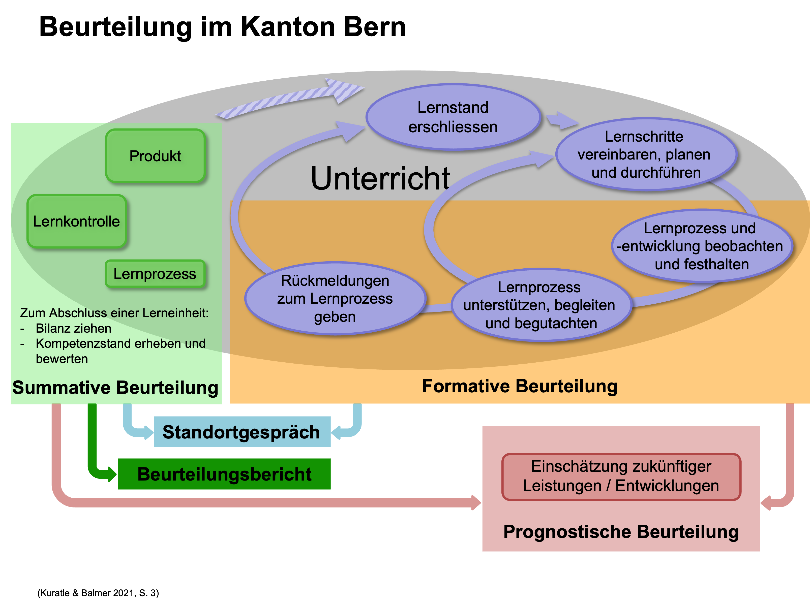

Theoretische Grundlagen
Grundlagen der Beurteilung
Mit diesem Lernmodul erhalten Sie nicht bloss eine Einführung in die Thematik «Beurteilung und Förderung», sondern auch ein Grundgerüst an Begriffsdefinitionen, die für das Verständnis und die Begründung der eigenen Beurteilungspraxis von entscheidender Bedeutung sind.
Die Studierenden …
- kennen die Bedeutung von «beurteilen» und «fördern» und können beides voneinander unterscheiden.
- kennen die Begriffe «formativ» und «summativ» und können diese im Lernen der SuS verorten.
- erkennen, dass sowohl das Beurteilen als vor allem auch das Fördern Kreisprozesse darstellen, die auch in Kreisläufen dargestellt werden können.
- erarbeiten sich eine differenzierte Sicht des Begriffs der «Leistung» und damit auch der «Leistungsbeurteilung».
- entwickeln ein Bewusstsein für die Komplexität von Beurteilung & Förderung, indem Sie das sowohl widersprüchliche als auch harmonische Zusammenspiel zwischen Gerechtigkeit, Bezugsnormen und Beurteilungsfunktionen erfassen.
1. Input zur Einführung
Mit diesem Screencast (Slides) erhalten Sie eine Einführung in die Thematik und Sie lernen die Unterscheidung zwischen «summativer» und «formativer» Beurteilung kennen.
2. Input Kreisläufe
Im Wissen darum, dass sowohl das Beurteilen als vor allem auch das Fördern in Kreisprozessen ablaufen, stellen wir Ihnen einen Förderkreislauf sowie zwei stärker auf die Beurteilung ausgerichtete Beurteilungskreisläufe vor.
Solche Kreismodelle sollen einerseits ermöglichen die Komplexität der Thematik überschaubar zu halten und zudem helfen, aufeinander aufbauende Aspekte der Beurteilung und Förderung besser zu verstehen. Es lohnt sich deshalb auch für das eigene Beurteilungskonzept sich von solchen Modellen leiten zu lassen. Allenfalls entwickeln Sie darauf aufbauend ein eigenes Kreismodell Ihres persönlichen Beurteilungskonzeptes.
Beurteilung im Kanton Bern
Ein spezielles Augenmerk möchten wir auf die Beurteilungssituation im Kanton Bern richten. Im Input werden wir abschliessend auch den unten abgebildeten Kreislauf vorstellen, wo sowohl das Vokabular, als auch die gesetzlichen Vorgaben des Kantons schematisch abgebildet sind. Innerhalb der beiden Beurteilungsmodulen (Formative und Summative, prognostische Beurteilung) haben sich die Dozierenden darauf geeinigt, dass wir uns im Sinne der Kohärenz und des Konsenses vor allem auf diesen Kreislauf von Adamina et al. (2015) stützen werden. Es lohnt sich deshalb für Sie, diesen kennen zu lernen. Wie bereits erwähnt, stellen wir Ihnen auch diesen Kreislauf in diesem Screencast (Slides) näher vor.

Vertiefung «Abschlussphase»
Wie im Input zu den «Kreisläufen» und dort in den Ausführungen zum «Beurteilungskreislauf» bereits hingewiesen, stellt die Rückgabe von Lernkontrollen, Tests oder Prüfungen (gemeint ist die summative Abschlussphase) ein eher marginalisiertes Thema dar.
Es stellen sich dabei unter anderem folgende Fragen. Beantworten Sie diese auf LearningView.
- Wie gebe ich den Test zurück? Mit welchen Worten, mit welchen Hinweisen?
- Welche Angaben machen Sie auf Ihren Tests (Punkte, Punktedurchschnitt, Noten, Notendurchnitt, …)?
- Was ist mit den «Fehlern» oder den «Unkorrektheiten» die in den Tests gemacht wurden bzw. mit den «Punkten», die im Test nicht «geholt» wurden?
- Werden die Aufgaben noch einmal besprochen? Wenn ja, mit der ganzen Klasse oder nur mit einzelnen?
- Muss man den Test «verbessern»? Darf man nachträglich noch zeigen, dass man es eingentlich «kann» (Stichwort: Wiederholungstests)?
Auftrag:
Im folgenden Video stellt Ihnen Alcala, Leah 2015 von der «Martin Luther King Middle School» in Berkeley (USA) Ihre «Strategie» vor, wie Sie bei Ihren SuS des 7. und 8. Schuljahres Tests zurückgibt.
- Lassen Sie sich von diesem «System», von dieser «Strategie» oder von dieser Möglichkeit inspirieren und erarbeiten Sie sich Ihre eigenen Ideen, Möglichkeiten oder auch schon Strategien.
- Bauen Sie diese schliesslich auch in Ihr Beurteilungskonzept ein.
Spannende Aussagen in diesem Video:
«So I see that now when I give tests back they’re continuing to learn.»
«My hope is, that trough this strategy they see, that studying their mistakes and learning from their mistakes is really what learning is.»
Vorschlag für das Bibliografieren und Zitieren des Videos: Alcala, Leah 2015 - Tch TeachingChannal - Highlighting Mistakes - A Grading Strategy
3. Input zum Leistungsbegriff
Wenn es ja «Leistungen» sein sollen, die gefördert und beurteilt werden sollen, dann ist es unerlässlich, sich im Rahmen des folgenden Screencasts (Slides) über den Begriff der schulischen «Leistung» Gedanken zu machen.
4. Input zur Komplexität
Die Komplexität von Beurteilung und Förderung zeigt sich vor allem im Zusammenspiel zwischen Gerechtigkeit, Bezugsnormen und Beurteilungsfunktionen. Im folgenden Screencast (Slides) lernen Sie zunächst einmal die Begrifflichkeiten kennen. Im abschliessenden Verarbeitungsauftrag wird es dann darum gehen, Gemeinsamkeiten sowie Widersprüchlichkeiten zu erarbeiten.